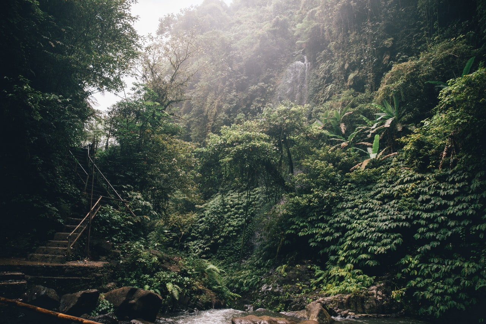
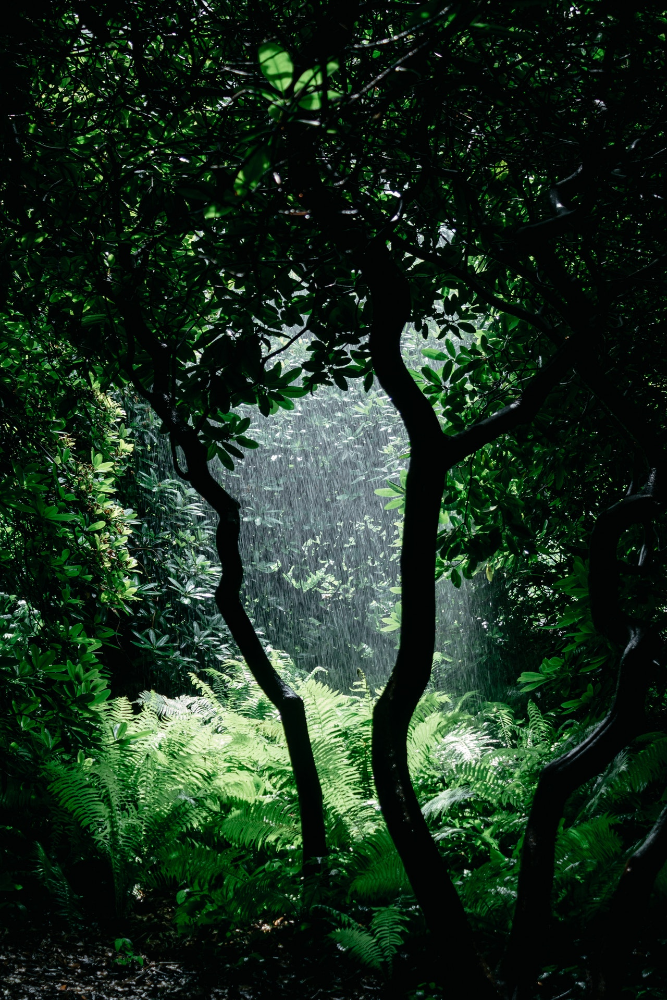
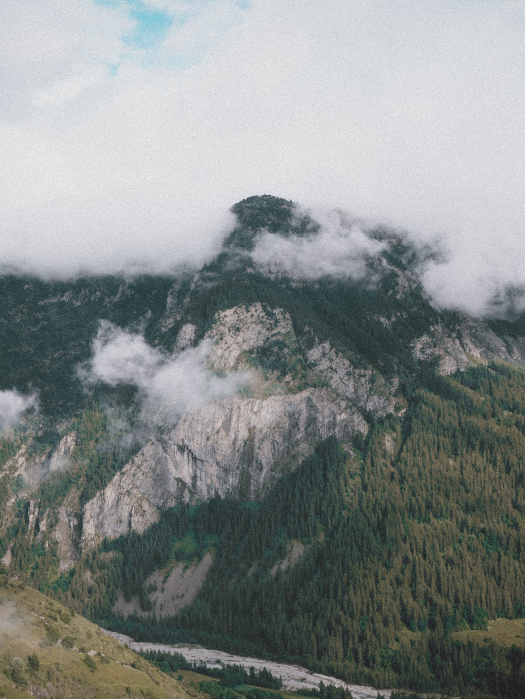
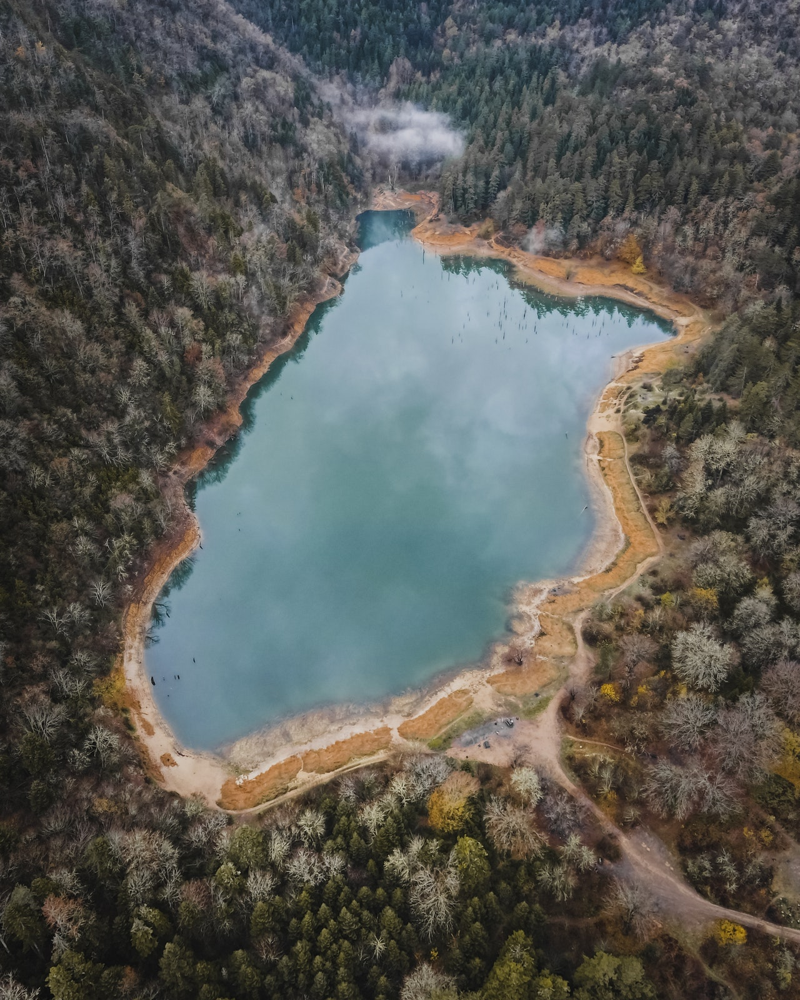
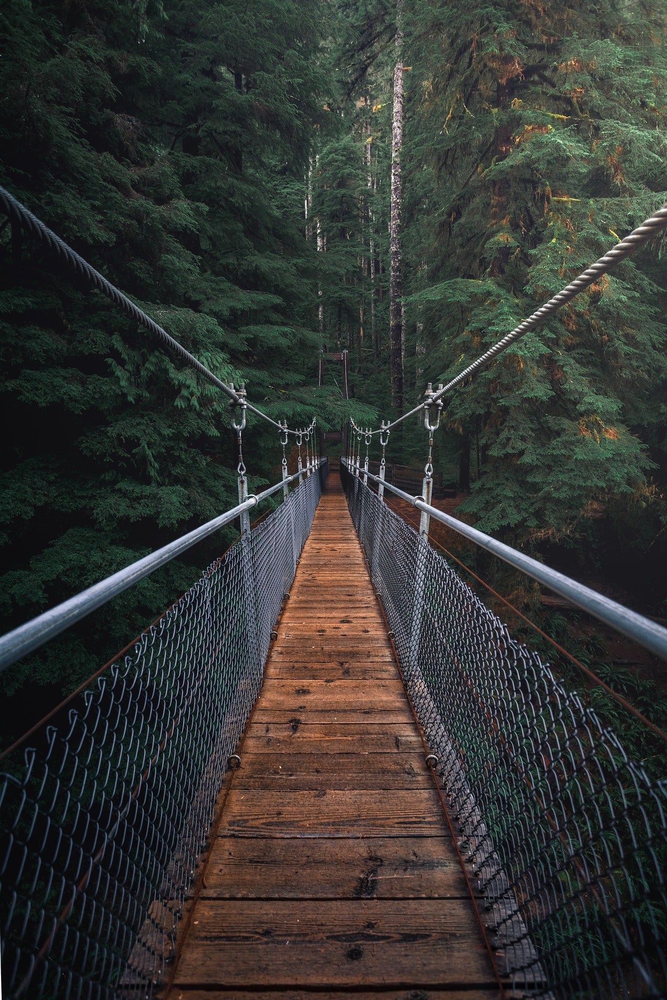
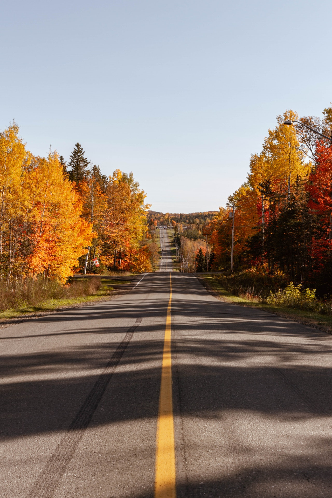
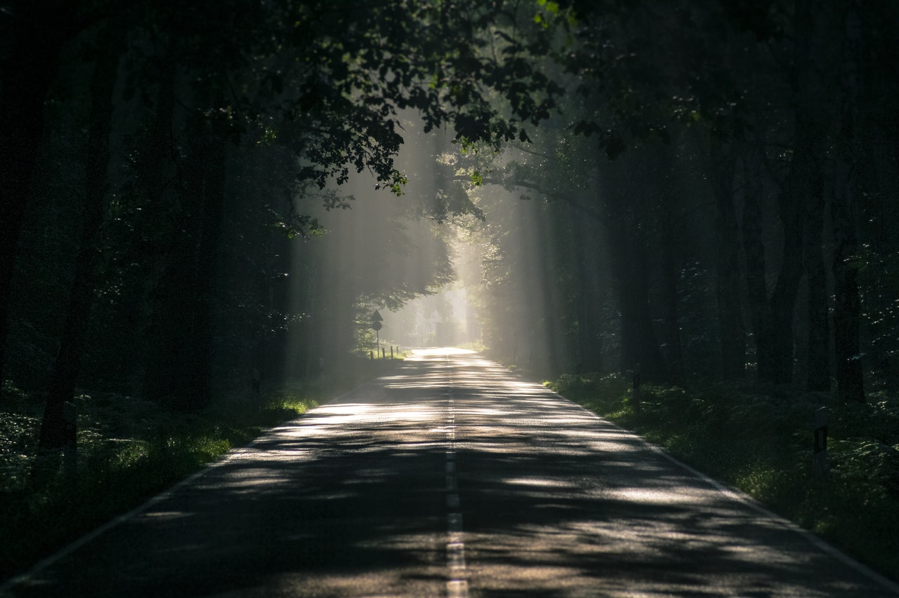
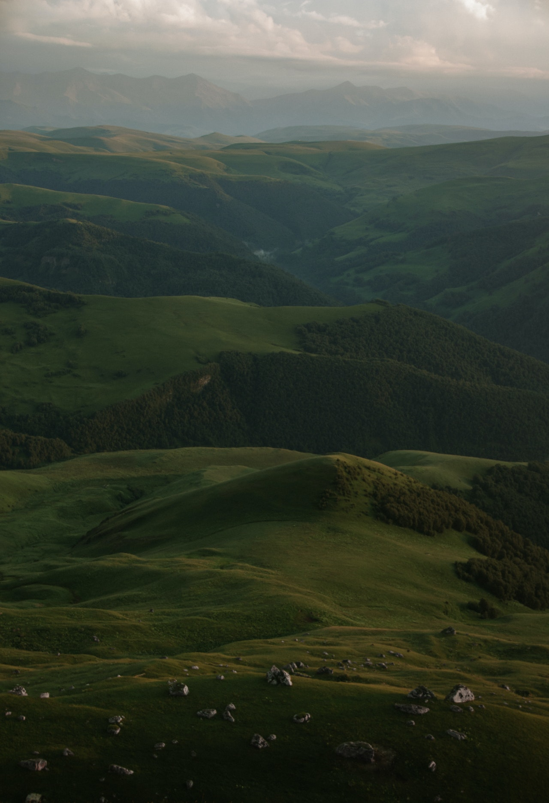

123 сайтуха
Что такое лес? Лес — составная часть природы, понятие «лес» можно рассматривать на разных уровнях. В глобальном масштабе — это часть биосферы, в локальном — это может быть насаждение. Лес также можно рассматривать как природно-зональное подразделение, как провинциальное подразделение, как лесной массив (Шипов лес, Шатилов лес, Чёрный лес), как экосистему[2]. Леса занимают около трети площади суши, площадь леса на Земле составляет 38 млн км²[3]. Из них 264 млн га, или 7 %, посажены человеком[4], к началу XXI века человек уничтожил около 50 % площадей лесов, ранее существовавших на планете[5]. Половина лесной зоны принадлежит тропическим лесам. Площади, занятые деревьями с сомкнутостью крон менее 0,2—0,3, считаются редколесьем[2].
Структура леса В зависимости от биологических особенностей важнейших растений, их возраста и определённых физико-географических условий в лесу развивается несколько ярусов растений. Ярусы — достаточно чётко отграниченные горизонты концентрации деятельных органов растений. Ярусы могут быть образованы одним или двумя и более видами. В лесах различают ярусы[6]:
1. Древостой. Полог леса — совокупность крон сомкнувшихся деревьев. В лесах умеренного пояса может быть до двух лесных пологов, в тропических лесах — до пяти ярусов древостоя. Во влажных тропических лесах есть ярус очень высоких деревьев, возвышающихся над пологом леса.
2. Подлесок. Состоит из кустарников и низких деревьев.
3. Травяной или травяно-кустарничковый.
4. Моховой или мохово-лишайниковый[6].
5. Лесная подстилка — «слой органических остатков на поверхности почвы в лесу»[7] (БСЭ). Она состоит из опавших листьев, веток, цветов, плодов, коры и других остатков растений, фекалий и трупов животных, оболочек куколок и личинок. Бывает, что в лесной подстилке находится несколько миллионов обитателей на каждом квадратном метре, от простейших и бактерий до мышей и других мелких млекопитающих. Поэтому обычно подстилка и есть самый густонаселённый ярус[8]. Слой остатков отмерших растений представляет собой мёртвый покров[9]. Роль лесной подстилки очень велика, она выполняет следующие функции: 1. Место образования перегноя. 2. Защита почвы от размыва и механического уплотнения. 3. Регулятор водно-воздушного режима почв. 4. Регулятор лесорастительных свойств почв. 5. Место концентрации элементов питания растений[7].
.jpg)
6. Подземный ярус леса состоит из корневой системы растений[10], лесных почв и их многочисленных обитателей, включая фауну, грибы и микроорганизмы. Встречается внеярусная растительность из вьющихся и лазящих растений, и эпифитов[11]. Основным компонентом является древостой. Подлесок и подрост, а в лесах с густым плотным пологом и живой напочвенный покров, могут отсутствовать. Живой напочвенный покров включает в себя имеющиеся мхи, лишайники, травянистые растения и кустарнички[12].
Опушка леса Опушка леса — полоса перехода к смежному типу растительности. Как правило, на опушке деревья покрыты листьями на всю высоту, здесь больше кустарников, лиан и подроста. Опушка отличается от соседних типов растительности видовым составом растений и животных. Многие виды встречаются исключительно на опушке[8][13].
Валежник Валежник в Беловежской пуще Валежник — упавшие на землю стволы деревьев или их части: сучья, ветви, сухие и гниющие. Свежий валежник может использоваться в качестве топлива. Свежий валежник, в случае возникновения лесного пожара, способствует его быстрому распространению. Кроме того валежник позволяет размножаться насекомым, особенно короедам, и развиваться грибным болезням, которые могут перекинуться на живые деревья. Поэтому свежий валежник по возможности в необходимых количествах удаляют из леса. Разложившийся валежник становится безвредным, и тогда его удаление из леса приносит уже не пользу, а ущерб, напрасно лишая лесную почву природного удобрения[14][15]. Валежник укрепляет склоны, защищает почву. Он является постоянным или временным домом для многих обитателей: микроорганизмов, грибов, членистоногих, моллюсков, земноводных и пресмыкающихся, птиц и даже мелких млекопитающих. Для успешного развития растений некоторых видов необходимо, чтобы их семена проросли в валежнике. Валежник играет значительную роль как долговременный резервуар углерода. Например, в хвойных лесах в валежнике вместе с почвой может содержаться до 25—30 % запасённого в лесу углерода[16].
Steam На главную